Facturas de cliente¶
Desde la factura de cliente a la cobranza¶
With Odoo, you can choose from different workflows that cover your business needs. You can make a single payment for one invoice, or a single payment for multiple invoices, and even apply discounts for advance payments.
Desde el Borrador de factura a las Ganancias y pérdidas¶
The usual billing process for clients, after goods have been delivered or the service has been performed, involves issuing the invoice, the client depositing that payment in the bank, receiving the payment, reconciling the client’s account balance, and finally reporting it on the Balance Sheet.
Billing occurs when a contractual obligation is fulfilled. If you ship a box to a customer, you have met the terms of the contract and can invoice them. If your supplier sends you an order, they have fulfilled the terms of that contract and can invoice you. Additionally, the terms of the contract are fulfilled when the box is moved to or from a truck. At this point, Odoo supports the creation of what warehouse staff call a Draft Invoice.
Creación de facturas¶
Los borradores de factura se pueden generar de forma manual desde otros documentos como órdenes de venta, órdenes de compra, etc. Aunque puede crear un borrador de factura directamente si así lo desea.
Se debe proporcionar al cliente una factura con la información necesaria para que ellos puedan pagar por los bienes y servicios ordenados y entregados. También debe incluir otra información necesaria para pagar la factura en tiempo y forma.
Borradores de factura¶
El sistema genera facturas cuyo estado al inicio será de borrador. Mientras que estas facturas sigan sin validarse no afectarán la contabilidad dentro del sistema. Los usuarios pueden crear sus propios borradores de facturas.
Creemos una factura de cliente con la siguiente información:
Cliente: Agrolait
Producto: iMac
Cantidad: 1
Precio unitario: 100
Impuestos: impuesto del 15%
 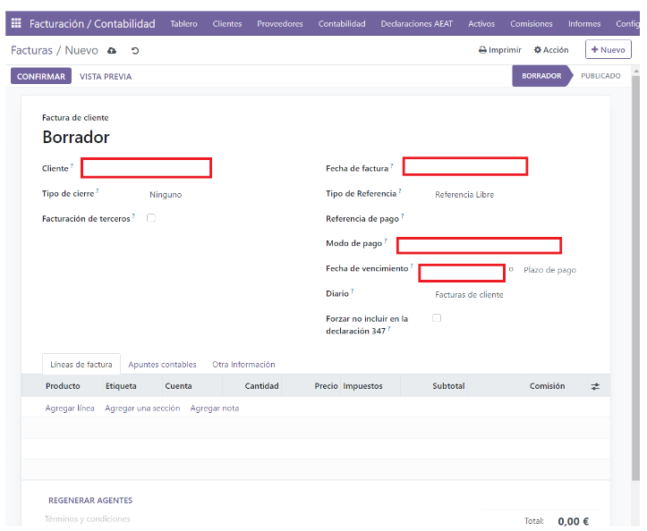
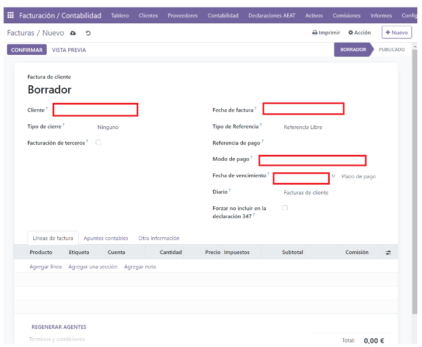
We fill in the previously indicated data:
 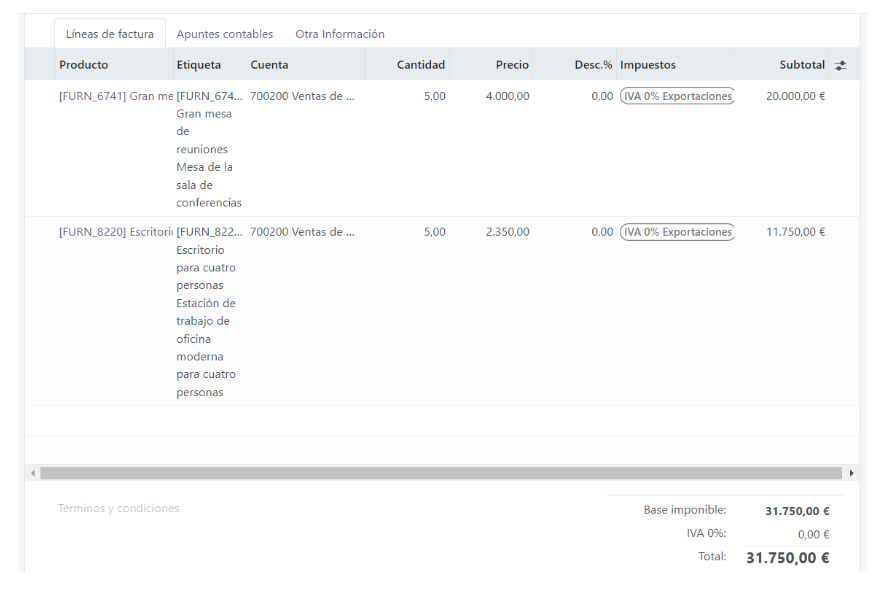
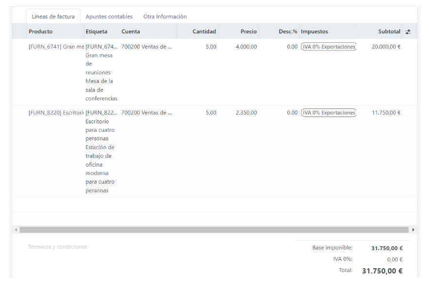
El documento se compone de tres partes:
la parte superior de la factura, con la información del cliente,
el cuerpo principal de la factura, con líneas de factura detalladas,
la parte inferior de la página, con detalles acerca de los impuestos, y los totales.
Facturas proforma o abiertas¶
When we have the invoice with the data entered, the next step is to save it. To do this, we will click on the cloud icon that appears next to «New.»
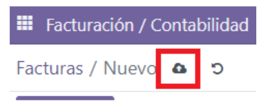In this way, the information will be saved, and Odoo will change the status from DRAFT to pending CONFIRMATION.
At this point, we can view the invoice by clicking on PREVIEW or see how the accounting entries would look by clicking on the «Accounting Entries» tab.
If we exit without confirming the invoice, when we check the invoice dashboard, it will appear as follows:

Without an invoice number and in a different color.
At this point, we can customize the information bar. At the end, next to Status, we will have three dots. If we click on them, a screen will appear with a series of checkmarks that allow us to add or remove elements from the information bar:

If we enter the invoice again and click on CONFIRM, Odoo will automatically assign an invoice number, and the corresponding accounting entries for this invoice will be created.
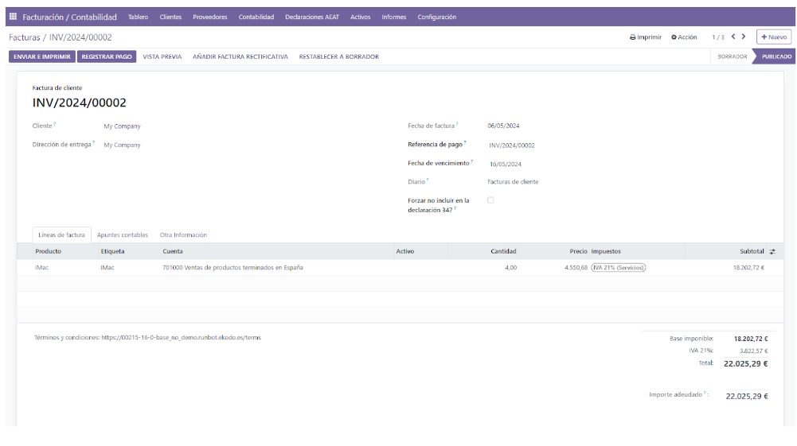In this image, we can see what the accounting entry would look like:

Enviar la factura al cliente¶
From here, we have the option to send the invoice to the client in PDF format via email. We click on Send and Print, and it will take us to the following screen:

Where we will enter the email (if it is configured, this step won’t be necessary as the information will appear automatically).
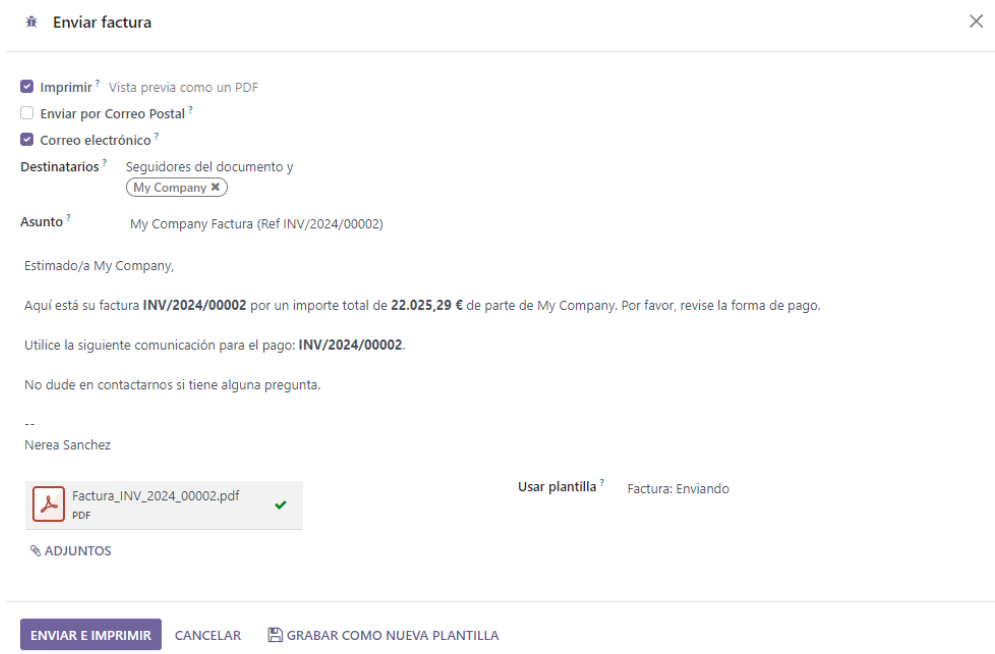Un asiento contable normal que se generó de una factura validada se verá así:
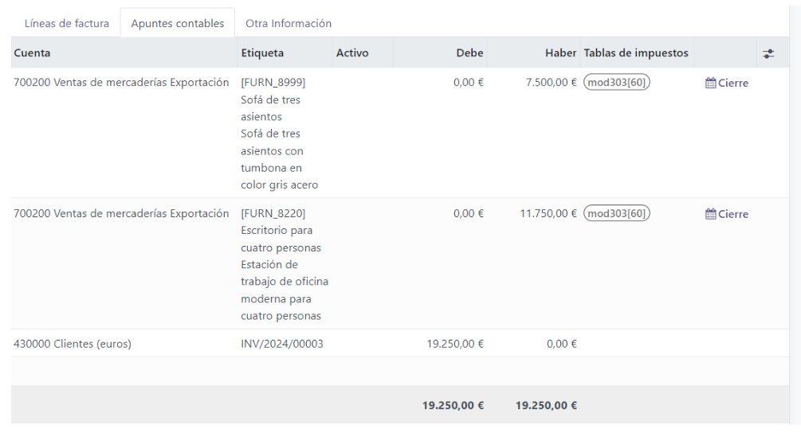Pagos¶
In Odoo, an invoice is considered to be paid when the associated accounting entry has been reconciled with the payment entries. The invoice will remain as «Unpaid» until it is recorded.
Un asiento contable normal que se generó de una factura validada se verá así:

Recibir un pago parcial a través del estado de cuenta bancario¶
Puede ingresar en Odoo sus estados de cuenta bancarios de forma manual, o puede importarlos desde un archivo csv o desde otros formatos predefinidos de acuerdo a la localización de su contabilidad.
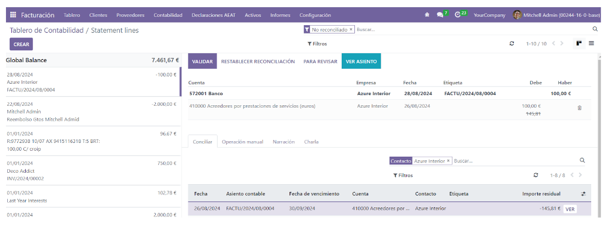display «You have outstanding payments for this customer. You can reconcile them to pay this invoice. «
the invoice.
Seguimiento de pagos¶
Hay una tendencia creciente de clientes que pagan cada vez más tarde. Además, los recaudadores deben realizar todo tipo de esfuerzos para cobrar cada vez más rápido.
Odoo le ayudará a definir su estrategia de seguimiento. Para recordarle a los clientes pagar sus facturas pendientes, puede definir diferentes acciones dependiendo de que tan atrasado está el pago. Estas acciones son un conjunto de niveles de seguimiento que se activan cuando la fecha de vencimiento de una factura ha sobrepasado un cierto número de días. Si hay otras facturas pendientes del mismo cliente, se ejecutarán las acciones de la factura más vencida.
_customer-invoices/aging-report:
Reporte de antigüedad del cliente:¶
Use the Open Items Report to determine which customers have outstanding payments and initiate your collection process.
Estado de resultados¶
El estado de resultados muestra los detalles de sus ingresos y gastos. En última instancia, este le da una imagen clara de sus pérdidas y ganancias netas. Algunas veces se refieren a él como «Estado de ingresos» o «Estado de ingresos y gastos.»
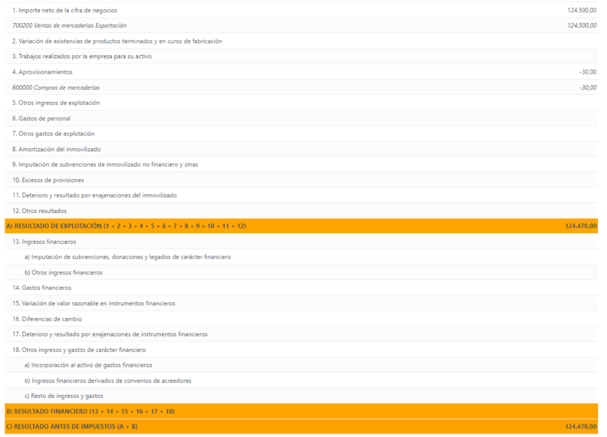Balance general¶
El balance general resume los activos, pasivos y capital de su empresa en un punto específico del tiempo.
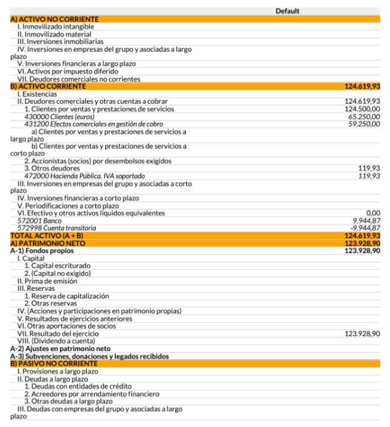 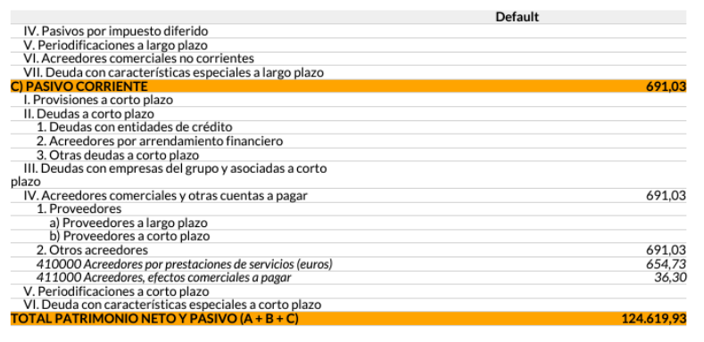method, you should expect a decrease in account «Current Assets» once the material has been shipped to the customer.